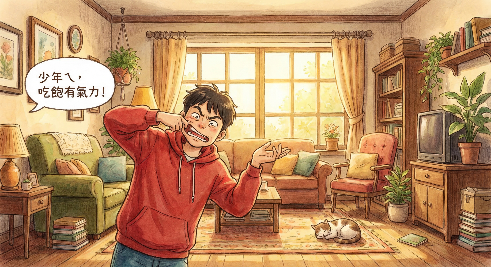
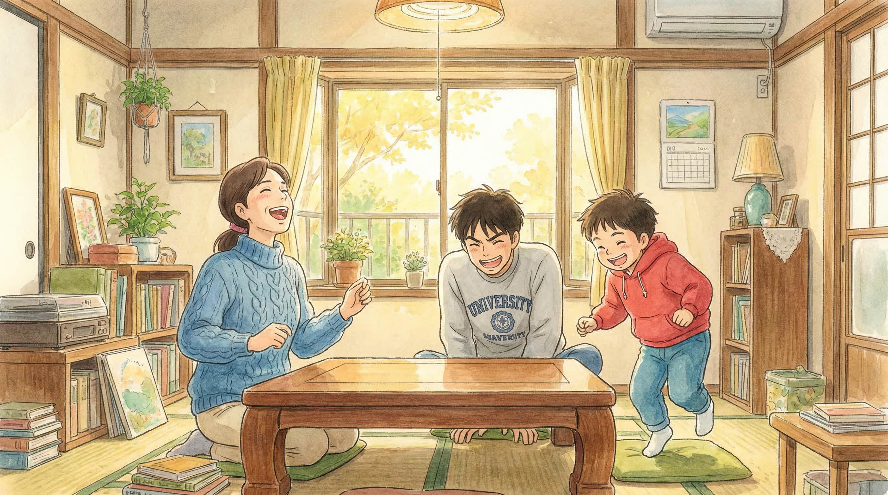
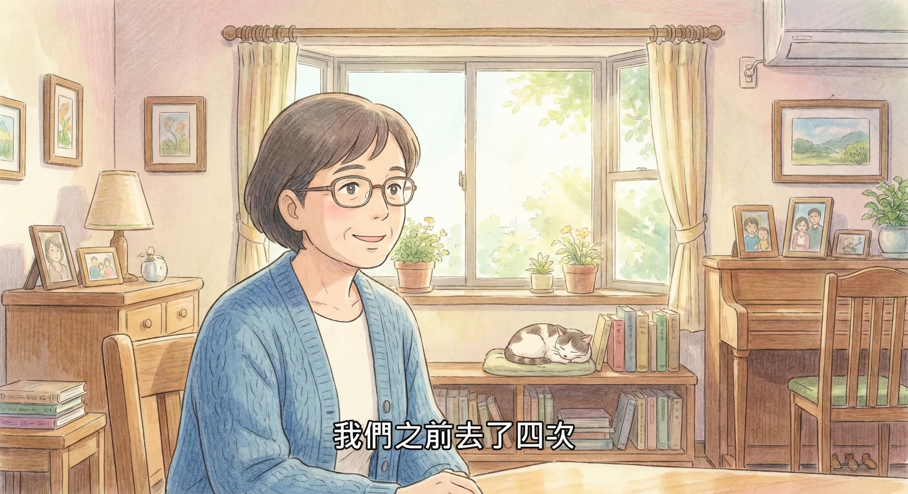
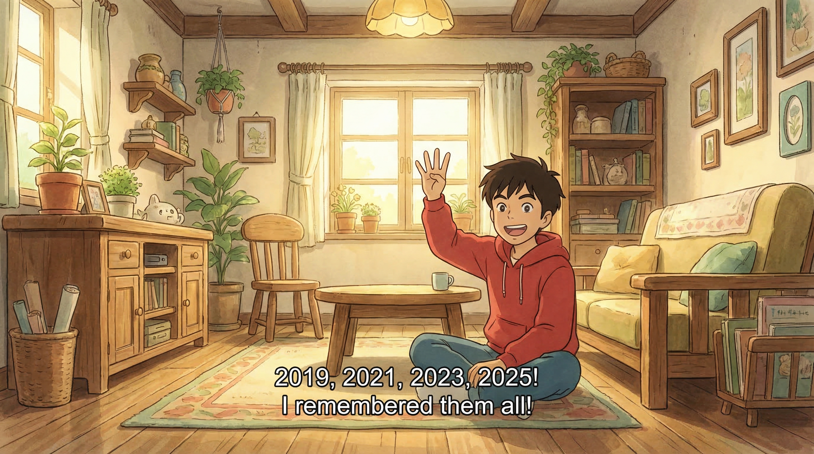
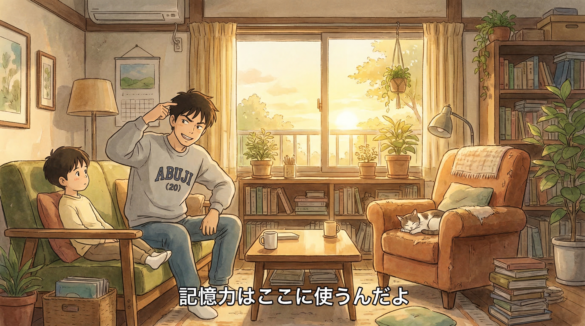
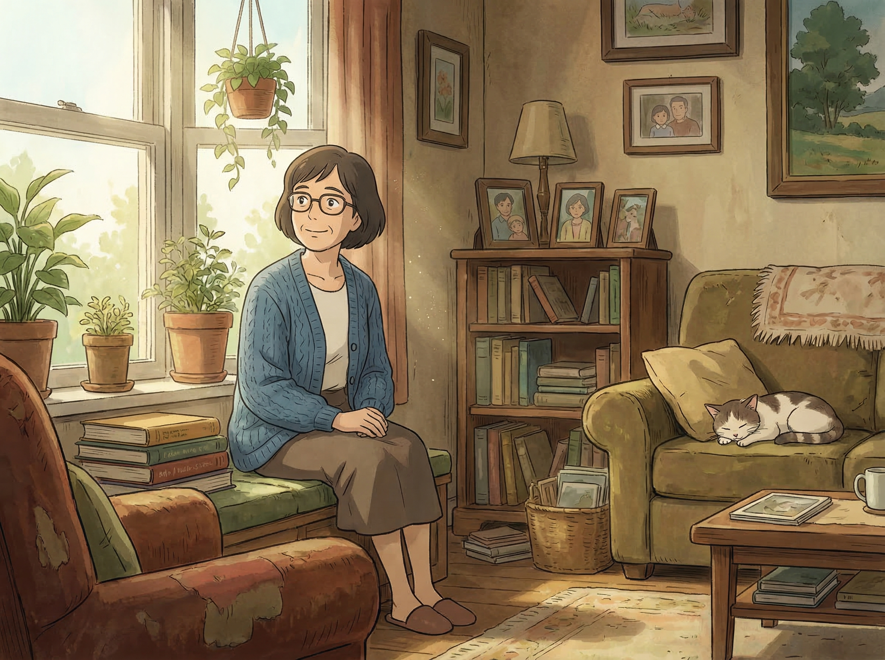
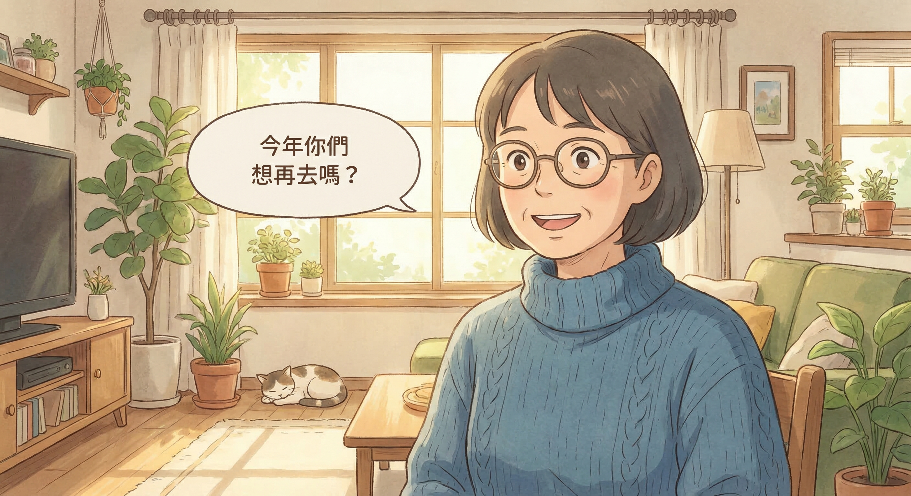
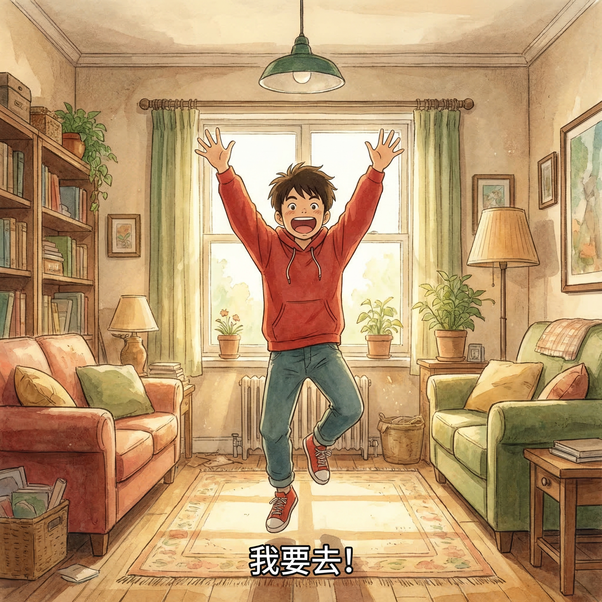

👨👩👦 故事角色
媽媽凱莉
50 多歲，溫柔賢慧
最愛織毛衣
哥哥阿布吉
20 歲大學生
酷酷的但關心弟弟
弟弟棉花糖
15 歲高中生
愛笑愛講話
第一部分：週六上午的客廳
陽光從窗簾縫隙灑入，一家人各做各的事

週六上午十點半，南部的陽光溫暖地灑進客廳。淺色木質地板反射著光線，紅色木製沙發上，媽媽凱莉正專心地織著毛衣。

凱莉坐在沙發中央，手裡的棒針靈活地舞動著。她偶爾抬頭看看電視，臉上帶著溫柔的笑容。

客廳另一頭，弟弟棉花糖整個癱在懶骨頭上，手指在手機螢幕上飛快地滑動著。紅色的 Hoodie 和牛仔褲，是這個年紀最標準的打扮。

單人沙發上，哥哥阿布吉窩在角落，頭上戴著大大的耳機，沉浸在自己的音樂世界裡。灰色的大學 T 恤讓他看起來隨性又帥氣。

電視裡傳來熱鬧的鑼鼓聲，旅遊節目正在播放大甲媽遶境的畫面。密密麻麻的人群，虔誠的信徒，畫面充滿了台灣傳統的宗教氛圍。
第二部分：爸爸的電話
一通電話，打破了客廳的平靜

突然，凱莉的手機響了起來。她放下手裡的毛衣，拿起手機看了看螢幕。

凱莉的語氣變得認真起來，兩個兒子都抬起頭看向媽媽。

掛掉電話後，凱莉眉頭微皺，看了看客廳裡的兩個兒子。

棉花糖從懶骨頭上坐了起來，好奇地問。

第三部分：意外的話題
電視裡的畫面，勾起了共同的回憶

凱莉用下巴指了指電視，螢幕上正好播到大甲媽遶境的盛大場面。

棉花糖的眼睛亮了起來，整個人從懶骨頭上彈了起來。

阿布吉摘下了一側的耳機，難得地接話。

棉花糖興奮地比劃著當時的情景，手舞足蹈的模樣逗笑了媽媽和哥哥。
第四部分：回憶殺
那些年的大甲媽，那些年的回憶

凱莉被弟弟的模樣逗笑了，眼神裡滿是溫柔。

棉花糖模仿著阿婆的台語，全家人都笑了。

弟弟脫口而出這幾個年份，讓哥哥有點驚訝。

阿布吉酸了一句，但嘴角帶著笑意。

棉花糖認真地說，眼睛亮晶晶的。

凱莉的眼神放空，回想著過去的點點滴滴。


阿布吉一臉驚訝，顯然不記得了。
第五部分：今年再去？
一個提議，讓客廳的氣氛變了

凱莉看著兩個兒子，語氣試探著。

棉花糖超級興奮地舉手，像個小學生一樣。

阿布吉若有所思地看了看弟弟，又看了看媽媽。

語氣還是淡淡的，但眼神裡有關心。

凱莉露出了滿意的笑容，眼角的細紋都藏不住喜悅。

棉花糖在懶骨頭上彈了一下，開心地不得了。

客廳裡，三個人的臉上都是期待的表情。電視裡的大甲媽遶境還在繼續，但這個家的故事，才正要開始...